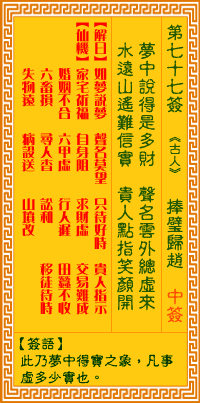

观音灵签第七十七签 【捧璧归赵】 |
 | |||
梦中说梦获多财 身外浮名总莫猜 水远山遥难信定 贵人一指笑颜开 |
||||
| 【吉凶】 | 下中签 | 【宫位】 | 午宫 | |
| 【签语】 | 此卦梦中得宝之象，凡事虚多少实也。 | |||
| 【解曰】 | 如梦说梦 声明莫望 只待好时 贵人指示 | |||
| 【仙机】 | 此签家宅祈福，自身阻，求财虚，交易难成，婚姻不合，六甲虚，行人迟，田蚕不收，六畜损，寻人杳，讼和，移徙待时，失物远，病殁 送，山坟改。 | |||
| 【详解】 | 在梦里说梦见得到了大量的珠宝，犹如身外虚名不必再去推测;山高水远如何能凭断距离?待贵人一指明路，因才领悟而笑逐颜开。 梦中说梦，声名虚望，只好待时，贵人接引。此签梦中得财之象，凡事空虚无力。 本签示之于弟子曰。梦中得财之象。亦即是空虚无力者。总而言之。身外浮名。总无可猜。水远山遥难信定。伊是遥远之地。无法信之。定之。贵人一指时。君尔 笑逐颜开。易言之。梦中说梦声名虚望只好待时贵人接引。 此签有”笑里藏刀”之意。奉劝当事人，勿心怀不轨。言语是一门艺术，也是一项工具，可以用来杀人，也可以用来救人。有人可能天生伶牙俐齿，能够把话说得 很圆，在当下就能让对方深信不疑。本身能言善道是一件好事，但在说话的同时，”心里想的”也很重要。如果心存善念，那么说出口的话，相信也会是好话。反 之，如果只是表面上说的好听，但心里却充满怨恨，只想着如何报复别人，那”言语”就变成了一种恐怖的工具，可以杀人于无形之中。须知不怀好意，终将害人 害己。 | |||
| 【典故】 | 春秋时代，赵国惠文王得到一块世上稀有的美玉，称为和氏壁，秦昭王知道了，要以十五座城池封换和氏壁，惠王知道秦王要骗他，但毫 无办法对付。他委派蔺相如带了玉壁到秦国谈判，结果暴露了秦王的欺诈，相如收回玉壁，拒绝卖给秦国。当夜相如完好的将玉壁带回赵国，保住了价值连城的宝物。《东周列国 志》 | |||